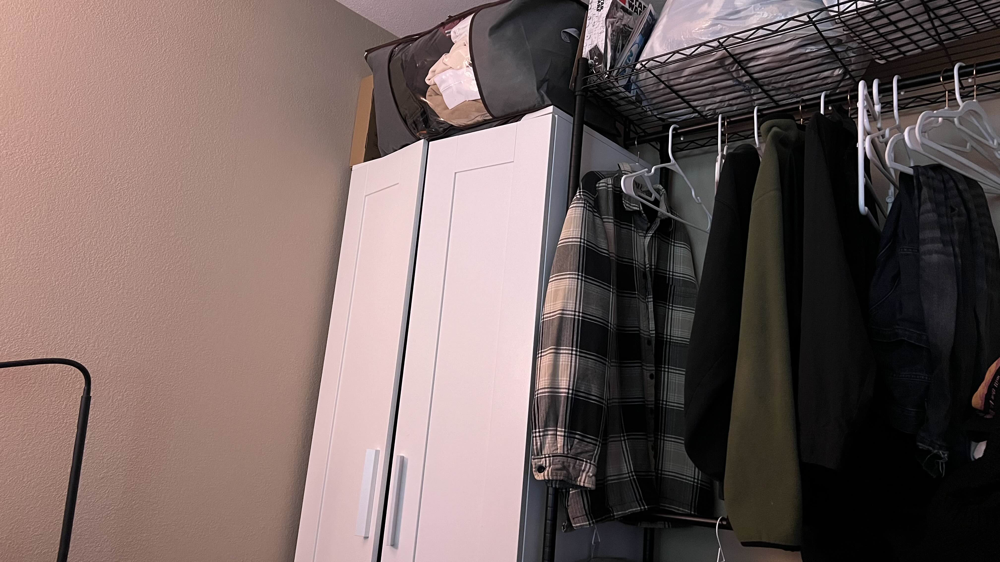
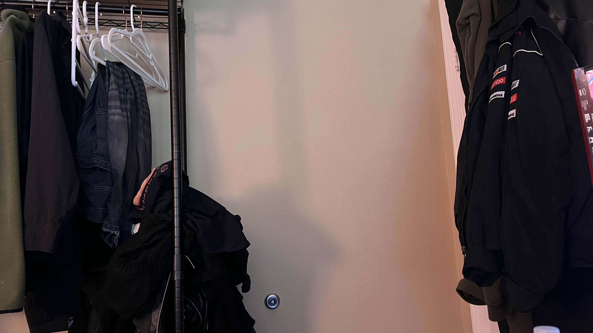
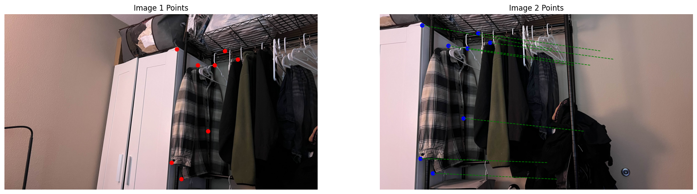
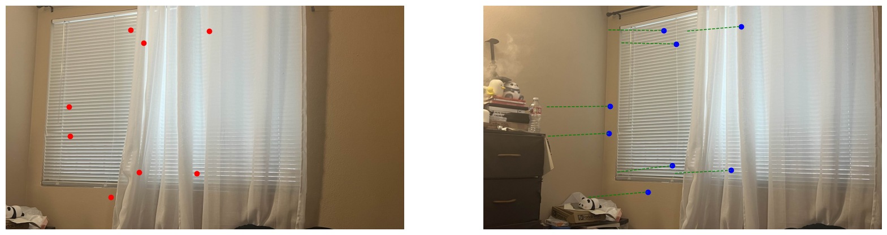
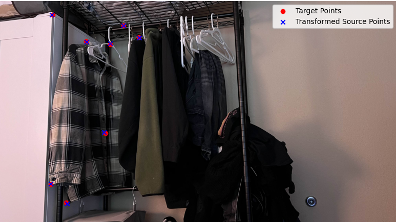
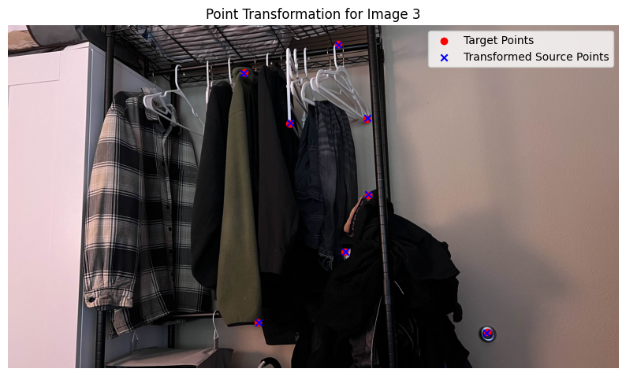
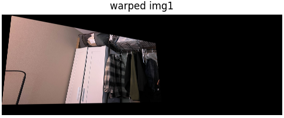

Part A: Image Warping and Mosaicing
Introduction
This project involves creating a seamless panorama by stitching together three overlapping images. The process includes selecting corresponding points between images, computing homographies, warping images to align them, and blending the warped images into a cohesive mosaic. The objective is to demonstrate image alignment techniques and advanced image processing using Python.

Image 1: Left

Image 2: Center (Reference)

Image 3: Right
1. Correspondence Point Selection
The first step in panorama creation is to identify corresponding points between overlapping images. These points serve as key landmarks that guide the alignment process.
Using an interactive tool, I manually selected eight corresponding points between Image 1 and Image 2, and between Image 3 and Image 2. These points typically include facial landmarks, edges, and corners to ensure accurate alignment.
The selected points are saved in a JSON file for reuse and to maintain consistency across different runs.

Correspondence Points between Image 1 and Image 2

Correspondence Points between Image 3 and Image 2
2. Homography Computation
With the correspondence points identified, the next step is to compute the homography matrices that map points from one image to another. Homography is a transformation that maps the perspective of one image to another, allowing for proper alignment.
This project implements the Direct Linear Transformation (DLT) algorithm manually through the computeH function.
The computeH function takes in two sets of corresponding points and constructs a system of linear equations to solve for the homography matrix.
By performing Singular Value Decomposition (SVD) on the constructed matrix, the function identifies the homography that best aligns the source points to the target points.
Two homographies are computed:
- H1to2: Maps Image 1 to Image 2
- H3to2: Maps Image 3 to Image 2
These homographies are essential for warping the images so that they align perfectly with the reference image (Image 2).

Homography H1to2: Image 1 → Image 2

Homography H3to2: Image 3 → Image 2
3. Image Warping
Using the computed homographies, each image is warped to align with the reference image (Image 2). This involves transforming the perspective of Image 1 and Image 3 so that their overlapping regions match those of Image 2.
The warping process is implemented manually through the warpImage function.
This function performs inverse mapping, where each pixel in the panorama canvas is mapped back to the source image using the inverse of the homography matrix.
This method ensures accurate pixel alignment and allows for precise control over the warping process.
The warpImage function handles necessary offsets to manage negative coordinates and ensure that all images fit within the panorama canvas.
By iterating over each pixel in the output panorama, the function determines the corresponding source pixel and assigns the appropriate color values.

Warped Image 1 aligned to Image 2

Warped Image 3 aligned to Image 2
4. Panorama Size Computation
Before blending the warped images, it's crucial to determine the size of the panorama canvas. This ensures that all images fit perfectly without any cropping or excessive empty space.
The pano_size function calculates the transformed corners of each image after warping and determines the minimum and maximum extents.
These calculations provide the required panorama dimensions and necessary offsets to translate images appropriately.
By aggregating the transformed corners, the function identifies the overall boundaries of the panorama, accounting for all three images. This step is vital for setting up the canvas on which the final mosaic will be created.

Panorama Size and Offsets Calculation
Credit to my housemate for helping me figuring out this visualization (above).
5. Image Blending
Once all images are warped and aligned on the panorama canvas, the final step is to blend them seamlessly. This is achieved using feather blending, which smoothly transitions overlapping regions to minimize visible seams.
The blend_imgs function employs feathering masks created by the feather_mask function.
These masks are based on the distance of each pixel from the image borders, ensuring that pixels closer to the center have higher weights.
By applying these masks, the blending process reduces abrupt changes in pixel intensities, resulting in a cohesive and visually appealing panorama.
The blending process involves iterating over each warped image, applying the feathering mask, and accumulating the weighted pixel values. The final panorama is obtained by normalizing the accumulated values to maintain proper color intensities.

Final Blended Mosaic Panorama
Conclusion
This project successfully demonstrates the creation of a seamless panorama by stitching multiple images using custom functions like computeH and warpImage. By manually handling homography computations and image warping, I gained a deeper understanding of image alignment and transformation techniques, which enhances my post-processing workflows.
As someone doing freelance photography as a hobby, these skills have helped given me a way to capture and present expansive landscapes and immersive scenes in a different way. Understanding the mechanics behind image stitching allows me to achieve precise alignment and seamless blending in my photograph-taking, enriching the visual quality of my hobbyist projects and expanding my creative capabilities. It's been lots of fun.